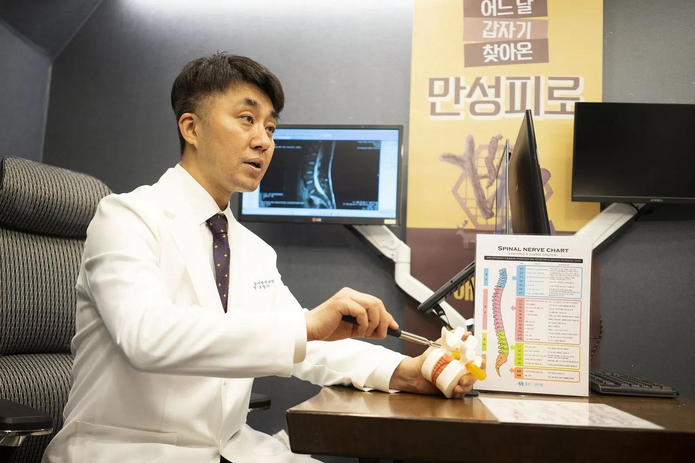

계단에서 난간을 꼭 잡게 되었다면 다리 힘과 균형, 시력과 신발, 복용 약 같은 여러 요인이 겹쳤다는 신호일 수 있어, 언제부터 어떤 상황에서 불안한지를 먼저 묻고 안전한 생활 환경과 함께 점검합니다.
여쭙는 것
- 언제부터 난간을 꼭 잡게 되셨나요?
- 오를 때와 내려올 때 중 어느 쪽이 더 불안하신가요?
- 어지러움이나 눈이 침침한 느낌이 함께 있나요?
생활에서 해 볼 것
- 계단 조명을 밝게 하고 난간이 있는 쪽으로 천천히 이동하기
- 슬리퍼 대신 발을 감싸고 바닥이 미끄럽지 않은 신발 신기
- 의자를 잡고 천천히 일어났다 앉는 동작으로 다리 힘 유지하기
한의원에서 함께 살필 것
- 계단에서 다리에 힘이 빠지는 느낌이 드는 경우 걸음걸이와 일상 활동량을 함께 살핍니다.
- 무릎이나 엉덩이 통증이 있어 난간에 기대게 되는 경우 아픈 동작과 자세를 함께 살핍…
- 몸이 전반적으로 무겁고 피곤한 경우 식사와 잠, 생활 리듬을 함께 살핍니다.
먼저 확인이 필요한 신호
- 갑자기 한쪽 다리에 힘이 빠지거나 말이 어눌해지는 경우(즉시 응급실)
- 어지러움과 함께 눈앞이 캄캄해지는 느낌이 반복되는 경우
- 넘어진 뒤 머리를 부딪히거나 통증이 심한 경우

예전에는 그냥 오르내리던 계단인데 이제는 난간부터 찾게 된다면, 몸이 안전을 위해 보내는 신호일 수 있습니다. 불안해하기보다 이유를 차분히 살펴보면 대비할 수 있는 부분이 많습니다.
왜 이런 불편이 생길 수 있나요
- 허벅지와 엉덩이 근육이 약해지면 한쪽 다리로 몸을 받치는 순간이 불안해집니다.
- 눈이 침침하거나 계단이 어두우면 발을 디딜 위치가 잘 보이지 않습니다.
- 어지럼을 일으킬 수 있는 약이나 일어설 때 혈압이 떨어지는 경우도 영향을 줄 수 있습니다.
- 무릎이나 엉덩이 통증 때문에 무의식적으로 난간에 기대는 습관이 생기기도 합니다.

먼저 이렇게 여쭙니다
- 언제부터 난간을 꼭 잡게 되셨나요?
- 오를 때와 내려올 때 중 어느 쪽이 더 불안하신가요?
- 어지러움이나 눈이 침침한 느낌이 함께 있나요?
- 최근에 넘어질 뻔한 일이 있었나요?
- 복용 중인 약이 최근에 바뀌었나요?
일상에서 먼저 해 볼 수 있는 것
- 계단 조명을 밝게 하고 난간이 있는 쪽으로 천천히 이동하기
- 슬리퍼 대신 발을 감싸고 바닥이 미끄럽지 않은 신발 신기
- 의자를 잡고 천천히 일어났다 앉는 동작으로 다리 힘 유지하기
- 짐을 들 때는 한 손은 비워 난간을 잡을 수 있게 하기
- 계단 끝에 미끄럼 방지 테이프를 붙여 디딜 곳을 눈에 띄게 하기

한의원에서 함께 살필 수 있는 경우
- 계단에서 다리에 힘이 빠지는 느낌이 드는 경우 걸음걸이와 일상 활동량을 함께 살핍니다.
- 무릎이나 엉덩이 통증이 있어 난간에 기대게 되는 경우 아픈 동작과 자세를 함께 살핍니다.
- 몸이 전반적으로 무겁고 피곤한 경우 식사와 잠, 생활 리듬을 함께 살핍니다.
좋은꿈참사랑한의원에서는 걷는 모습과 한쪽 다리로 서는 균형, 계단 동작을 확인하고 복용 중인 약과 어지럼 여부를 함께 여쭙니다. 필요하다고 판단될 때 침이나 추나 등을 정하고, 귀가 전에는 집 안 계단과 신발에서 바꿔 볼 점을 알려 드립니다.
얼마나 지켜보고 언제 진료를 받으면 좋을까요
- 피곤한 날에만 난간을 더 의지하고 잘 쉰 날에는 괜찮다면, 신발과 조명을 바꾸고 다리 힘 운동을 하며 2~3주 정도 지켜볼 수 있습니다.
- 2~3주 동안 생활을 조정했는데도 불안이 그대로이거나 오히려 늘었다면 진료를 받아 원인을 함께 살펴보시길 권합니다.
- 한 달 사이 넘어질 뻔한 일이 두 번 이상 있었다면 지켜보기보다 진료 일정을 잡아 보세요.
- 갑자기 한쪽 다리에 힘이 빠지거나 말이 어눌해지고 얼굴 한쪽이 처지면 지켜보지 말고 바로 응급실로 가세요.
- 넘어진 뒤 엉덩이나 허리가 아파 걷기 어렵다면 정형외과나 응급실에서 영상 검사를 먼저 받으세요.

이런 경우를 예로 들 수 있습니다
- 예를 들어 무릎 통증이 생긴 뒤 아픈 다리를 아끼느라 계단에서 한쪽 다리로만 버티게 된 경우, 반대쪽 엉덩이와 허리가 함께 뻐근해지기도 해 무릎과 허리를 같이 살핍니다.
- 예를 들어 최근 혈압약이나 잠을 돕는 약이 바뀐 뒤 아침 계단에서 휘청한 경우, 약을 임의로 끊지 말고 처방한 의사에게 바뀐 시기와 증상을 함께 알리는 것이 먼저입니다.
- 예를 들어 겨울이 되어 바깥 활동이 줄고 실내에서만 지낸 몇 주 뒤 계단이 부쩍 힘들어진 경우, 활동량이 줄며 다리 힘이 함께 떨어진 것은 아닌지 하루 걸음과 생활 리듬을 함께 여쭙니다.
스스로 점검해 보세요
- 의자에서 팔을 쓰지 않고 일어나기가 예전보다 어렵다
- 내려올 때 한 칸마다 두 발을 모으며 내려온다
- 계단에서 발끝이 턱에 걸린 적이 있다
- 어두운 계단이나 저녁 시간에 더 불안하다
- 아침에 일어날 때 어지러운 날이 있다
- 넘어질까 걱정되어 외출을 줄였다
- 최근 몇 달 사이 복용하는 약이 늘거나 바뀌었다
해당하는 항목이 여러 개라면 적어 두었다가 진료 때 보여 주세요. 이 목록은 진단이 아니라 이야기를 정리하는 데 쓰는 참고용입니다.

처음 오시면 이렇게 진행됩니다
접수 때 복용 중인 약 목록과 다른 병원 검사 결과가 있으면 함께 보여 주세요. 원장이 언제부터 어떤 계단에서 불안했는지 여쭙고, 진맥과 함께 걷는 모습, 의자에서 일어서는 동작, 한쪽 다리로 서는 균형을 확인합니다. 무릎이나 엉덩이 주변 힘줄의 통증이 있다면 필요하다고 판단될 때 초음파로 함께 봅니다. 그 뒤 오늘 할 치료와 이유를 먼저 설명드리고, 치료 뒤에는 잠시 쉬었다가 집에서 해 볼 동작과 다음 방문 간격을 정합니다. 처음 오시는 날은 진찰 시간이 있어 재진보다 오래 걸릴 수 있고, 부모님을 모시고 오신다면 가족 한 분이 함께 오시면 이야기를 정리하기 수월합니다. 좋은꿈참사랑한의원은 서울 동작구 만양로2길 2 신성빌딩 3층·5층에 있으며, 건물 안 이동이 걱정되시면 방문 전 전화(02-815-7510)로 확인해 주세요.
이렇게 기록해 오시면 상담이 쉬워집니다
- 난간을 잡게 된 시기와 계기
- 불안한 상황(내려오기, 어두운 곳, 짐을 들 때 등)
- 복용 중인 약 목록과 최근 바뀐 약

이런 증상은 먼저 확인이 필요합니다
- 갑자기 한쪽 다리에 힘이 빠지거나 말이 어눌해지는 경우(즉시 응급실)
- 어지러움과 함께 눈앞이 캄캄해지는 느낌이 반복되는 경우
- 넘어진 뒤 머리를 부딪히거나 통증이 심한 경우
복용 중인 약은 처방한 의사와 상의 없이 줄이거나 끊지 않습니다.
관련 글
- 70대 어르신 집의 욕실과 현관은 낙상을 줄이려면 어떻게 점검하나요?
- 지하철역 계단을 오르내릴 때 어지럽고 다리가 휘청할 때는 어떻게 살피나요?
- 계단을 내려갈 때 무릎이 아프면 한의원에서는 무엇을 먼저 묻나요?
한눈에 보는 표
| 구분 | 핵심 |
|---|---|
| 여쭙는 것 | 언제부터 난간을 꼭 잡게 되셨나요? 오를 때와 내려올 때 중 어느 쪽이 더 불안하신가요? |
| 생활에서 해 볼 것 | 계단 조명을 밝게 하고 난간이 있는 쪽으로 천천히 이동하기 슬리퍼 대신 발을 감싸고 바닥이 미끄럽지 않은 신발 신기 |
| 한의원에서 함께 살필 것 | 계단에서 다리에 힘이 빠지는 느낌이 드는 경우 걸음걸이와 일상 활동량을 함께 살핍니다. 무릎이나 엉덩이 통증이 있어 난간에 기대게 되는 경우 아픈 동작과 자세를 함께 살핍니다. |
| 먼저 확인이 필요한 신호 | 갑자기 한쪽 다리에 힘이 빠지거나 말이 어눌해지는 경우(즉시 응급실) 어지러움과 함께 눈앞이 캄캄해지는 느낌이 반복되는 경우 |
자주 묻는 질문
난간을 잡는 것은 나쁜 습관인가요?
안전을 위한 좋은 습관입니다. 다만 그렇게 해야만 할 만큼 불안해졌다면 이유를 한 번 살펴보는 것이 좋습니다.
집 안 계단은 어떻게 해야 하나요?
미끄럼 방지 테이프와 조명, 손잡이 보강을 점검하면 안전에 도움이 됩니다.
약 때문에 불안할 수도 있나요?
일부 약은 어지럼이나 졸림과 관련이 있을 수 있어, 복용 약 목록을 정리해 처방한 의사와 상의하시길 권합니다.
이 글은 일반적인 건강 정보이며 개인의 진단이나 치료를 대신하지 않습니다. 증상이 있거나 복용 중인 약이 있다면 진료를 통해 확인하세요. 치료 효과는 개인마다 다를 수 있습니다.
작성 기준: 일반적으로 알려져 있는 건강 정보를 참고해 정리했습니다(대표원장 감수). 증상 기록은 1~2주 동안 하루 1회, 비슷한 시간에 적어 오시면 지난 상태와 비교하기 쉽습니다.
좋은꿈참사랑한의원은 재진 때 지난번 이야기부터 이어서 여쭙니다. 진료시간과 예약은 오시는 길에서 확인하세요.
어디서 상담받을 수 있나요?
좋은꿈참사랑한의원은 서울 동작구 만양로2길 2 신성빌딩 3층·5층(서울 동작구 상도동, 7호선 상도역 3번 출구 근처)에 있습니다. 한의사 3명(이종호 대표원장, 조영기 수석진료원장, 정원영 진료원장)이 진료합니다. 진료시간은 평일 09:30~20:00(점심 13:00~14:00), 토·일·공휴일 09:30~15:00이며, 방문 전 전화로 확인을 권합니다. 예약은 네이버 예약, 카카오톡 상담, 전화 02-815-7510로 받습니다.